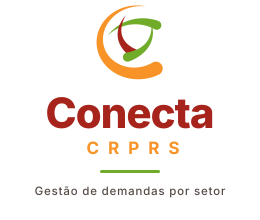

Conecta CRPRS — 3 propostas com o símbolo do CRPRS
Usa o "C" oficial (logo_vazado.png) como símbolo, com a paleta oficial.
D — Horizontal. Símbolo à esquerda, nome em vinho escuro e CRPRS em vinho.

E — Vertical. Símbolo sobre o nome, com a descrição "Gestão de demandas por setor".F — Selo vinho. Versão em fundo vinho, com o símbolo num círculo branco. Serve para cabeçalho e rodapé.